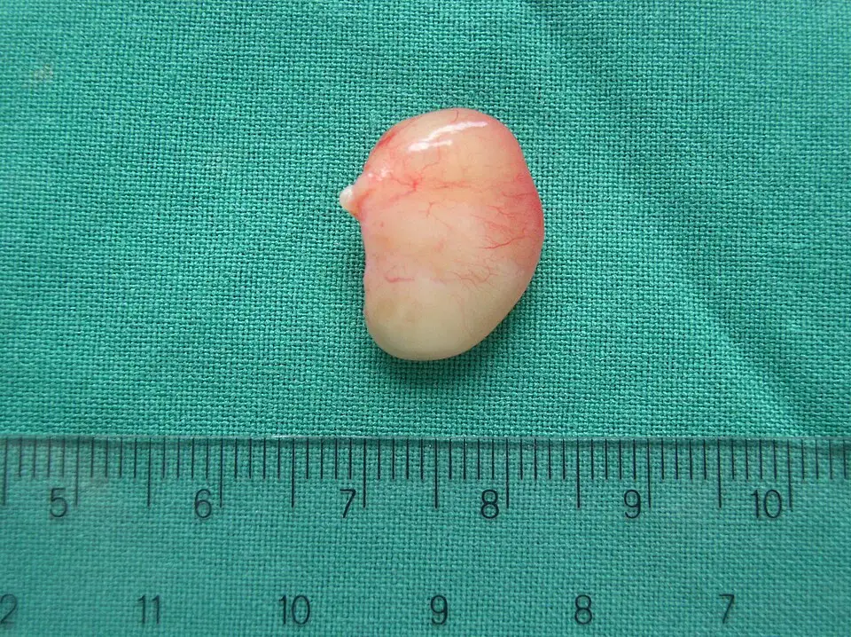

DX.5 — Rhinosinusite chronique avec polypes
La polypose se reconnaît à une obstruction nasale bilatérale avec perte d’odorat depuis au moins 12 semaines, puis à des polypes vus en endoscopie par l’oto-rhino-laryngologiste (ORL) S3S1. Le corticoïde nasal reste la base du traitement ; la chirurgie, puis les anticorps, n’interviennent qu’en cas d’échec S1S2.
1. Définition
La rhinosinusite chronique avec polypes est une inflammation des sinus durant au moins 12 semaines, où la muqueuse forme des excroissances bénignes bilatérales qui obstruent les fosses nasales S1S3. Les Hôpitaux universitaires de Genève (HUG) la nomment « polypose nasale » et la décrivent comme une forme particulière de rhinosinusite chronique S1.
2. Épidémiologie (Suisse, puis Europe)
En Suisse, les HUG estiment que la rhinosinusite chronique touche jusqu’à 15 % de la population, et la polypose nasale jusqu’à 3 % S1. Selon l’EPOS2020, consensus européen sur les rhinosinusites, la rhinosinusite chronique touche 5 à 12 % de la population générale S3. Le tableau des chiffres rassemble ces données, tandis que la fenêtre du terrain décrit le patient type des essais suisses d’autorisation S1S3S7.
Polypose nasale : chiffres suisses, puis européens
| Donnée | Population et lieu | Année | Source |
|---|---|---|---|
| Rhinosinusite chronique chez jusqu’à 15 % de la population | Suisse, estimation des HUG | 2025 | S1 |
| Polypose nasale chez jusqu’à 3 % de la population | Suisse, estimation des HUG | 2025 | S1 |
| Rhinosinusite chronique chez 5 à 12 % de la population générale | Europe, EPOS2020 | 2020 | S3 |
| Rhinosinusite chronique chez jusqu’à 4 % des enfants | Europe, EPOS2020 | 2020 | S3 |
| Dyskinésie ciliaire primitive associée à une polypose dans 15 à 30 % des cas | Europe, EPOS2020 | 2020 | S3 |
| Score SNOT-22 moyen de 41,0 avant chirurgie dans la forme avec polypes, contre 9,3 chez les témoins | Europe, patients en attente de chirurgie | 2020 | S3 |
Aucune prévalence suisse mesurée par endoscopie n’a été trouvée ; les chiffres des HUG restent donc des estimations hospitalières S1.
Le questionnaire SNOT-22 (Sino-Nasal Outcome Test à 22 items) chiffre le retentissement ; un score proche de 40 traduit une gêne modérée à sévère S3.
Terrain du patient atteint de polypose sévère
| Caractéristique | Valeur dans les essais SINUS-24 et SINUS-52 | Ce que le médecin en retient | Source |
|---|---|---|---|
| Âge moyen | 50,49 et 51,95 ans | Maladie de l’adulte d’âge moyen | S7 |
| Sexe masculin | 57,2 % et 62,3 % | Légère prédominance masculine | S7 |
| Durée moyenne de la polypose | 11,11 et 10,94 ans | Maladie chronique, souvent ancienne | S7 |
| Asthme associé | 58,3 % et 59,6 % | Rechercher l’asthme chez tout patient | S7 |
| Maladie respiratoire exacerbée par les anti-inflammatoires non stéroïdiens | 30,4 % et 26,8 % | Interroger sur l’aspirine | S7 |
| Chirurgie antérieure | 71,7 % et 58,3 % | La récidive après chirurgie est fréquente | S7 |
| Éosinophiles sanguins moyens | 437 et 431 cellules/µl | Inflammation de type 2 dominante | S7 |
| Enfant | Polypes rares chez l’enfant | Une polypose pédiatrique fait chercher une cause secondaire | S4S7 |
Ces essais ont recruté des formes sévères ; leurs chiffres décrivent donc les candidats à un anticorps, et non tout patient polypeux S7.
L’asthme et l’intolérance à l’aspirine augmentent le risque de polypes, selon le service de santé britannique (NHS) S4.
3. Physiopathologie
L’EPOS2020 distingue les rhinosinusites chroniques primaires selon leur distribution, diffuse ou localisée, puis selon l’endotype dominant, de type 2 ou non S3. La polypose bilatérale relève le plus souvent de l’inflammation de type 2, riche en éosinophiles ; le tableau des endotypes oppose ces deux profils S3.
Endotype de type 2 et endotype non 2 : ce qui les distingue
| Élément | Type 2 (polypose typique) | Non type 2 | Source |
|---|---|---|---|
| Plainte principale | Perte d’odorat, obstruction | Écoulement, douleur faciale | S3 |
| Endoscopie | Polypes, mucine éosinophile | Pus | S3 |
| Biologie | IgE élevées, éosinophilie | IgE normales, pas d’éosinophilie | S3 |
| Comorbidités | Asthme, maladie respiratoire exacerbée par les anti-inflammatoires, atopie | Moins d’asthme, moins d’atopie | S3 |
| Histologie | Au moins 10 éosinophiles par champ à fort grossissement (×400) | Éosinophiles en dessous de ce seuil | S3 |
| Conséquence thérapeutique | Corticoïdes, puis anticorps anti-type 2 si échec | Traitement médical, antibiotiques au long cours à discuter | S3S2 |
Les anticorps qui freinent l’inflammation de type 2 réduisent aussi la taille des polypes, ce qui confirme le rôle de cette voie S3.
L’éosinophilie tissulaire permet de prédire la récidive, si bien que l’histologie oriente désormais le choix des traitements S3.
Polype nasal après exérèse. Cette photographie en couleurs montre un polype entier, posé sur un champ opératoire vert, au-dessus d’une règle graduée en centimètres S10.

Le lecteur doit d’abord estimer seul la taille du polype grâce à la règle, puis repérer son point d’attache.
Sur la copie annotée, trois repères situent le corps du polype, son pédicule et l’échelle.
- Le repère 1 montre le corps du polype, lisse, translucide et parcouru de fins vaisseaux, aspect d’une excroissance inflammatoire bénigne S10S1.
- Le repère 2 montre le pédicule, point d’attache à la muqueuse sinusienne, que le chirurgien sectionne par voie endoscopique S10S1.
- Le repère 3 montre la règle ; la pièce mesure moins de 2 centimètres, ce qui reste une déduction tirée de l’échelle photographiée S10.
Ce que l’image décide. L’aspect translucide confirme une polypose inflammatoire, tandis que l’envoi systématique en histologie écarte une tumeur méconnue S3S6.
4. Démarche diagnostique
La démarche part d’une obstruction nasale chronique ; elle cherche d’abord un signe d’alarme, puis confirme la maladie par l’endoscopie et chiffre son contrôle S3. Le tableau des étapes précise chaque question et son seuil, puis la fenêtre du premier recours décrit ce que fait le médecin de famille S3S4.
Démarche diagnostique pas à pas
| Étape | Question | Outil | Seuil ou signe | Décision | Source |
|---|---|---|---|---|---|
| 1. Alarme | Un signe orbitaire, neurologique ou septique est-il présent ? | Anamnèse et examen | Œdème périorbitaire, diplopie, baisse de vision, céphalée sévère | Avis ORL ou hospitalier immédiat | S3 |
| 2. Durée | Les symptômes durent-ils depuis 12 semaines ou plus ? | Anamnèse | Au moins 12 semaines | Piste chronique | S3 |
| 3. Symptômes | Deux symptômes, dont obstruction ou écoulement ? | Anamnèse | Obstruction ou écoulement, avec douleur faciale ou perte d’odorat | Définition clinique remplie | S3 |
| 4. Côté | Les symptômes sont-ils unilatéraux ? | Anamnèse et rhinoscopie | Unilatéralité, saignement, croûtes, cacosmie | Endoscopie et imagerie, urgentes si une tumeur est suspectée | S3 |
| 5. Preuve | Des polypes sont-ils visibles au méat moyen ? | Endoscopie nasale | Polypes bilatéraux | Rhinosinusite chronique avec polypes | S3S1 |
| 6. Gravité | La maladie est-elle contrôlée ? | Grille de contrôle EPOS2020, SNOT-22 | SNOT-22 de 40 ou plus | Escalade thérapeutique | S3 |
| 7. Endotype | L’inflammation est-elle de type 2 ? | Éosinophiles, IgE, histologie | 250 éosinophiles/µl, IgE de 100, 10 éosinophiles par champ | Éligibilité à un anticorps | S3 |
Ce que fait le médecin de premier recours
| Moment | Action | Détail | Critère de passage | Source |
|---|---|---|---|---|
| Première consultation | Rinçages salés et corticoïde nasal | Éducation à l’observance et à la technique | Amélioration en 6 à 12 semaines | S3 |
| Première consultation | Éviter les antibiotiques | Pas de bénéfice démontré au long cours | Aucune prescription systématique | S3 |
| Première consultation | Chercher les comorbidités | Asthme, intolérance à l’aspirine, atopie | Orientation pneumologique si asthme non contrôlé | S3S2 |
| Signe d’alarme | Adresser immédiatement | Pas de traitement d’épreuve | Toute alarme orbitaire ou neurologique | S3 |
| Échec à 6 à 12 semaines | Adresser à l’ORL | Endoscopie et scanner en milieu spécialisé | Persistance des symptômes | S3 |
| Pas d’amélioration vers 12 semaines | Discuter la chirurgie | Proposée par le médecin traitant au Royaume-Uni | Polypes persistants | S4 |
Le médecin de famille voit souvent les polypes en regardant dans le nez, ce qui suffit à lancer le traitement local S4.
5. Anamnèse ciblée et drapeaux rouges
L’anamnèse confirme la chronicité, puis cherche la perte d’odorat, l’asthme et l’intolérance à l’aspirine, qui orientent vers l’endotype de type 2 S3S4. Les questions ciblées sont classées par intérêt diagnostique, tandis que les drapeaux rouges imposent un avis sans délai S3.
Questions ciblées et leur interprétation
| Question | Réponse évocatrice | Interprétation | Source |
|---|---|---|---|
| Depuis combien de temps le nez est-il bouché ? | 12 semaines ou plus | Durée de la forme chronique | S3 |
| Sentez-vous encore les odeurs ? | Odorat diminué ou perdu | Plainte dominante du type 2 | S3S4 |
| Le nez coule-t-il vers l’avant ou dans la gorge ? | Écoulement antérieur ou postérieur | Second symptôme majeur | S3S4 |
| Ronflez-vous ? | Ronflement apparu avec l’obstruction | Symptôme fréquent des polypes | S4 |
| Avez-vous de l’asthme ? | Asthme traité par corticoïde inhalé | Comorbidité de type 2, critère d’anticorps | S3 |
| L’aspirine ou un anti-inflammatoire aggrave-t-il vos symptômes ? | Crise après la prise | Maladie respiratoire exacerbée par les anti-inflammatoires | S3S4 |
| Éternuez-vous, avec démangeaisons et yeux qui coulent ? | Oui | Rhinite allergique à rechercher | S3 |
| Combien de cures de cortisone ces 12 derniers mois ? | Deux cures ou plus | Maladie mal contrôlée | S3 |
| Avez-vous déjà été opéré des sinus ? | Récidive après chirurgie | Candidat possible à un anticorps | S3S2 |
| Saignez-vous du nez, d’un seul côté ? | Oui | Alarme : chercher une tumeur | S3 |
Drapeaux rouges : quand ne pas traiter d’emblée
| Signe | Ce qu’il fait craindre | Conduite | Source |
|---|---|---|---|
| Œdème ou rougeur périorbitaire | Complication orbitaire | Avis immédiat en milieu spécialisé | S3 |
| Globe déplacé, diplopie, ophtalmoplégie | Extension orbitaire | Avis immédiat et imagerie | S3 |
| Baisse de l’acuité visuelle | Atteinte du nerf optique | Avis immédiat | S3 |
| Céphalée sévère, tuméfaction frontale | Complication intracrânienne ou osseuse | Avis immédiat et imagerie | S3 |
| Signes de méningite ou de sepsis, signe neurologique focal | Complication intracrânienne | Hospitalisation | S3 |
| Symptômes unilatéraux, saignement, croûtes, cacosmie | Tumeur ou rhinosinusite secondaire | Endoscopie et imagerie, urgentes si une tumeur est suspectée | S3 |
| Polype unilatéral irrégulier, ulcéré ou qui saigne | Lésion non inflammatoire | Examen plus poussé avant tout traitement | S6 |
Un seul de ces signes suffit pour écarter le traitement d’épreuve et adresser le patient ; la polypose typique reste bilatérale et indolore S3S4.
6. Examen physique ciblé, région par région
L’examen va du vestibule nasal à l’orbite et au thorax, car la polypose s’associe souvent à l’asthme S3S7. Chaque région a sa fenêtre : nez antérieur, fosse nasale en endoscopie, orbite et face, thorax et peau S3.
Région 1 — nez antérieur (rhinoscopie)
| Geste | Signe recherché | Interprétation | Source |
|---|---|---|---|
| Inspection du vestibule à la lumière | Masse pâle, lisse, translucide | Polype visible jusqu’au vestibule | S4S9 |
| Comparaison des deux fosses | Atteinte des deux côtés | Argument pour une polypose diffuse | S3 |
| Recherche d’un saignement de contact | Saignement, ulcération | Lésion à explorer, pas un polype banal | S6 |
| Recherche de croûtes ou d’une odeur | Croûtes, cacosmie | Drapeau rouge de forme localisée | S3 |
Région 2 — fosse nasale en endoscopie (ORL)
| Score | Aspect endoscopique | Signification | Source |
|---|---|---|---|
| 0 | Aucun polype | Pas de polype visible | S7 |
| 1 | Petits polypes dans le méat moyen, sans atteindre le bord inférieur du cornet moyen | Atteinte débutante | S7 |
| 2 | Polypes atteignant le bord inférieur du cornet moyen | Atteinte modérée | S7 |
| 3 | Gros polypes atteignant le bord inférieur du cornet inférieur, ou polypes au milieu du cornet moyen | Atteinte étendue | S7 |
| 4 | Gros polypes obstruant complètement la cavité nasale inférieure | Obstruction complète | S7 |
Le score s’additionne des deux côtés, de 0 à 8 ; dans les essais du dupilumab, le score initial moyen dépassait 5 S7.
L’endoscopie montre aussi le pus ou l’œdème du méat moyen, qui suffisent au diagnostic de rhinosinusite chronique sans polypes S3.
Région 3 — orbite et face
Région 4 — thorax et voies aériennes inférieures
| Élément | Pourquoi le chercher | Conséquence | Source |
|---|---|---|---|
| Asthme connu ou méconnu | Présent chez près de 6 patients sur 10 dans les essais | Bilan respiratoire et coordination avec le pneumologue | S7 |
| Asthme traité par corticoïde inhalé régulier | Critère d’éligibilité à un anticorps | Noter le traitement de fond | S3 |
| Asthme sévère associé | Oriente vers un anticorps actif sur les deux organes | Discussion d’une biothérapie | S2 |
Polype du méat moyen en endoscopie. Cette photographie endoscopique en couleurs montre une masse pâle et brillante qui remplit la fosse nasale, sur une muqueuse rose S9.

Le lecteur doit d’abord distinguer seul la masse pâle de la muqueuse rose qui l’entoure.
Sur la copie annotée, quatre repères situent le polype, ses vaisseaux, la muqueuse voisine et la lumière restante.
- Le repère 1 montre le corps du polype, grisâtre, lisse et brillant, aspect typique d’une excroissance inflammatoire bénigne S9S1.
- Le repère 2 montre de fins vaisseaux superficiels ; une surface régulière plaide pour un polype et non pour une tumeur, ce qui reste une déduction S9S6.
- Le repère 3 montre la muqueuse voisine, rose, qui sert de comparaison de couleur S9.
- Le repère 4 montre la lumière restante, étroite, ce qui explique l’obstruction et le ronflement S9S4.
Ce que l’image décide. L’aspect lisse et pâle confirme un polype ; l’atteinte des deux côtés, à vérifier par l’ORL, fonde ensuite la rhinosinusite chronique avec polypes S3.
7. Approche syndromique
La polypose appartient au syndrome d’obstruction nasale bilatérale chronique avec perte d’odorat S3S1. Le tableau comparatif la sépare des autres causes du lot, et la fenêtre des formes secondaires rappelle les maladies générales qui imitent une polypose primaire S3.
Polypose et diagnostics voisins du lot
| Diagnostic | Côté | Signe qui oriente | Ce qui sépare de la polypose | Source |
|---|---|---|---|---|
| Rhinosinusite chronique avec polypes (DX.5) | Bilatéral | Perte d’odorat, polypes au méat moyen | Référence | S3S1 |
| Rhinite allergique (DX.1) | Bilatéral | Éternuements, prurit, yeux qui coulent | Pas de polype à l’endoscopie | S3 |
| Rhinite virale aiguë (DX.2) | Bilatéral | Guérison en quelques jours | Durée inférieure à 12 semaines | S4S3 |
| Rhinite médicamenteuse (DX.3) | Bilatéral | Décongestionnant au long cours | L’EPOS2020 déconseille ces sprays dans la rhinosinusite chronique | S3 |
| Déviation de la cloison (DX.4) | Unilatéral fixe | Obstruction sans perte d’odorat | Pas de polype | S3 |
| Hypertrophie adénoïdienne (DX.6) | Bilatéral | Enfant | Polypes rares chez l’enfant | S4 |
| Tumeur maligne (DX.10) | Unilatéral | Saignement, croûtes, cacosmie | Biopsie, imagerie urgente | S3S6 |
Rhinosinusites secondaires à ne pas manquer
| Distribution | Mécanisme | Exemples | Indice | Source |
|---|---|---|---|---|
| Localisée | Pathologie locale | Origine dentaire, balle fongique, tumeur | Atteinte d’un seul côté | S3 |
| Diffuse | Mécanique | Dyskinésie ciliaire primitive, mucoviscidose | Début dans l’enfance, infections répétées | S3 |
| Diffuse | Inflammatoire | Granulomatose avec polyangéite, granulomatose éosinophilique avec polyangéite | Croûtes, signes généraux, éosinophilie | S3 |
| Diffuse | Immunitaire | Déficit immunitaire sélectif | Infections récidivantes | S3 |
| Localisée primaire | Type 2 | Rhinosinusite fongique allergique | Jeune, atopie, climat chaud et humide | S3 |
La forme localisée se traite souvent par chirurgie, alors que la forme diffuse relève d’abord du traitement médical S3.
Les profils cliniques typiques montrent comment le terrain et le côté orientent vers la polypose ou vers un autre diagnostic du lot S3S4.
Profils cliniques typiques et orientation
| Profil | Indice décisif | Orientation | Conduite | Source |
|---|---|---|---|---|
| Adulte asthmatique, nez bouché des deux côtés, anosmie depuis 6 mois | Perte d’odorat et asthme | Polypose de type 2 | Endoscopie, corticoïde nasal | S3S7 |
| Asthmatique qui s’aggrave après de l’aspirine | Intolérance aux anti-inflammatoires | Maladie respiratoire exacerbée par les anti-inflammatoires | Éviction, avis spécialisé | S4S3 |
| Ancien opéré des sinus dont les polypes reviennent | Récidive post-opératoire | Polypose difficile à traiter | Critères d’anticorps | S3S2 |
| Enfant avec polypes et infections répétées | Polypes rares à cet âge | Forme secondaire, mucoviscidose ou dyskinésie ciliaire | Avis spécialisé | S4S3 |
| Adulte avec obstruction d’un seul côté et saignements | Unilatéralité, saignement | Tumeur à exclure | Imagerie urgente, biopsie | S3 |
| Patient qui éternue, au nez qui coule clair et aux yeux qui piquent | Signes allergiques | Rhinite allergique | Bilan allergologique | S3 |
8. Diagnostic positif et critères
Le diagnostic positif repose sur les critères de l’EPOS2020 : des symptômes définis, une durée d’au moins 12 semaines, puis une preuve endoscopique ou scanographique S3. Les critères sont détaillés ligne par ligne, tandis que la grille de contrôle classe ensuite la maladie S3.
Critères EPOS2020 de la rhinosinusite chronique de l’adulte
| Critère | Exigence | Remarque | Source |
|---|---|---|---|
| Symptômes | Deux ou plus, dont obstruction nasale ou écoulement antérieur ou postérieur | Obligatoire | S3 |
| Symptômes associés | Douleur ou pression faciale, baisse ou perte de l’odorat | Facultatifs | S3 |
| Durée | 12 semaines ou plus | Sépare la forme chronique de la forme aiguë | S3 |
| Endoscopie | Polypes, pus du méat moyen ou œdème du méat moyen | Un signe suffit | S3 |
| Ou scanner | Atteinte de la muqueuse du complexe ostioméatal ou des sinus | Alternative à l’endoscopie | S3 |
| Questions allergiques | Éternuements, rhinorrhée aqueuse, prurit nasal, yeux qui coulent | À poser systématiquement | S3 |
| Forme avec polypes | Polypes bilatéraux à l’endoscopie | Définit la polypose diffuse | S3S1 |
Contrôle clinique de la rhinosinusite chronique (dernier mois)
| Élément | Contrôlée (tous) | Partiellement contrôlée (au moins 1) | Non contrôlée (3 ou plus) | Source |
|---|---|---|---|---|
| Obstruction nasale | Absente ou non gênante | Présente la plupart des jours | Présente la plupart des jours | S3 |
| Rhinorrhée ou écoulement postérieur | Faible et muqueux | Mucopurulent la plupart des jours | Mucopurulent la plupart des jours | S3 |
| Douleur ou pression faciale | Absente ou non gênante | Présente | Présente | S3 |
| Odorat | Normal ou peu diminué | Diminué | Diminué | S3 |
| Troubles du sommeil ou fatigue | Absents | Présents | Présents | S3 |
| Endoscopie | Muqueuse saine | Muqueuse malade | Muqueuse malade | S3 |
| Traitement de secours (6 mois) | Non nécessaire | Une cure | Symptômes persistants malgré le secours | S3 |
Une maladie qui reste symptomatique malgré une chirurgie adéquate, le corticoïde nasal et jusqu’à deux cures d’antibiotiques ou de corticoïdes par an devient « difficile à traiter » S3.
9. Examens complémentaires
L’endoscopie nasale suffit au diagnostic, alors que le scanner sert à préparer une chirurgie ou à explorer une atteinte unilatérale S3. Le tableau des examens ciblés précise l’indication, le seuil et la conduite, puis la fenêtre du score de Lund-Mackay indique l’interprétation chiffrée du scanner S3.
Examens ciblés : indication, seuil, interprétation, conduite
| Examen | Indication | Seuil | Interprétation | Conduite | Source |
|---|---|---|---|---|---|
| Endoscopie nasale | Tout patient avec symptômes de 12 semaines | Polypes bilatéraux | Diagnostic confirmé | Traitement local | S3 |
| Scanner des sinus | Échec du traitement, chirurgie envisagée, forme unilatérale | Score de Lund-Mackay | Voir la fenêtre dédiée | Planification chirurgicale | S3 |
| Imagerie urgente | Forme unilatérale avec suspicion de tumeur | Tout signe d’alarme | Lésion non inflammatoire possible | Biopsie | S3 |
| Éosinophiles sanguins | Avant un anticorps | 250 par µl ou plus | Inflammation de type 2 | Critère d’éligibilité | S3 |
| IgE totales | Avant un anticorps | 100 ou plus | Inflammation de type 2 | Critère d’éligibilité | S3 |
| Histologie | Pièce opératoire ou biopsie | 10 éosinophiles ou plus par champ (×400) | Forme éosinophile | Critère d’éligibilité, risque de récidive | S3 |
| Test d’odorat | Perte d’odorat | Anosmie au test | Atteinte sévère | Critère d’éligibilité | S3 |
| SNOT-22 | Suivi de la qualité de vie | 40 ou plus | Retentissement important | Critère d’éligibilité | S3 |
Score de Lund-Mackay : interprétation chiffrée
| Valeur | Signification | Conséquence | Source |
|---|---|---|---|
| Maximum | 24, soit 12 par côté | Échelle de l’atteinte sinusienne | S3 |
| 2 ou moins | Excellente valeur prédictive négative | La rhinosinusite chronique devient peu probable | S3 |
| 5 ou plus | Excellente valeur prédictive positive | Maladie réelle très probable | S3 |
| 1 ou plus | Seuil d’une chirurgie appropriée | Après au moins 8 semaines de traitement médical | S3 |
| 17,96 à 19,03 en moyenne | Formes sévères des essais du dupilumab | Repère des candidats à un anticorps | S7 |
Le scanner ne remplace pas l’endoscopie, car l’EPOS2020 exige des symptômes avant toute interprétation des images S3.
10. Arbre décisionnel
L’arbre commence par les drapeaux rouges, car ils imposent un avis immédiat ; il passe ensuite par le côté, l’endoscopie, puis le contrôle sous traitement S3. Le tableau décisionnel précise la conduite qui suit chaque nœud de l’arbre S3S6.
- Un signe orbitaire, neurologique ou septique impose un avis immédiat, avant tout traitement d’épreuve S3.
- Une atteinte unilatérale, qui saigne ou forme des croûtes, conduit à l’endoscopie et à l’imagerie, urgentes si une tumeur est suspectée S3.
- Des polypes bilatéraux, avec symptômes depuis 12 semaines, confirment la rhinosinusite chronique avec polypes S3.
- Le corticoïde nasal et les rinçages se poursuivent 6 à 12 semaines, puis le médecin évalue le contrôle S3.
- L’absence d’amélioration après 5 à 6 semaines de mométasone fait envisager un changement de thérapie, selon l’information professionnelle suisse (AIPS) S6.
- Un échec du traitement médical conduit au scanner et à la chirurgie ; une récidive après chirurgie fait discuter un anticorps S3S2.
Arbre décisionnel détaillé
| Nœud | Si oui | Si non | Source |
|---|---|---|---|
| Signe d’alarme orbitaire, neurologique ou septique ? | Avis immédiat, imagerie | Nœud suivant | S3 |
| Atteinte unilatérale, saignement ou croûtes ? | Endoscopie, imagerie, biopsie | Nœud suivant | S3S6 |
| Deux symptômes depuis 12 semaines ou plus ? | Endoscopie | Autre diagnostic du lot | S3 |
| Polypes bilatéraux ? | Corticoïde nasal et rinçages | Chercher une rhinosinusite sans polypes ou une rhinite | S3 |
| Amélioration après 6 à 12 semaines ? | Poursuite et suivi en premier recours | Avis ORL et scanner | S3 |
| Maladie non contrôlée malgré le traitement médical ? | Cures courtes de corticoïde oral, puis chirurgie | Traitement d’entretien | S3S2 |
| Récidive après chirurgie avec trois critères sur cinq ? | Anticorps monoclonal | Traitement médical, révision chirurgicale | S3S2 |
11. Prise en charge selon les recommandations suisses
11.A But
Le but est de contrôler les symptômes, de rendre l’odorat et de limiter les cures de cortisone, car la maladie elle-même ne guérit généralement pas S1S3. Le traitement vise aussi l’asthme associé, qui partage la même inflammation S3S2.
11.B Moyens
Les moyens s’échelonnent du traitement local à la chirurgie, puis aux anticorps ; le tableau des moyens les classe par palier S1S3S2. Le schéma de la mométasone, le schéma du corticoïde oral, la fenêtre chirurgicale et le schéma du dupilumab structurent chaque étape S6S3S7.
Moyens de prise en charge, par palier
| Palier | Moyen | Modalité | Responsable | Source |
|---|---|---|---|---|
| 1 | Rinçages salés isotoniques | Chaque jour, avant le spray | Patient | S3S5 |
| 1 | Corticoïde nasal | Au long cours | Médecin de famille | S3S1 |
| 2 | Corticoïde oral en cure courte | 1 à 2 cures par an en cas de contrôle partiel ou absent | Médecin, puis ORL | S3S2 |
| 3 | Chirurgie endoscopique des sinus | Après échec du traitement médical bien conduit | ORL | S1S2S3 |
| 4 | Anticorps monoclonal | Récidive après chirurgie ou asthme sévère associé | ORL, pneumologue, allergologue | S2S3 |
| Option | Traitement par aspirine après désensibilisation | Patients intolérants à l’aspirine, observants | Spécialiste | S3 |
| Déconseillé | Décongestionnant nasal au long cours | Seulement en ajout temporaire si le nez est très bouché | Médecin | S3 |
| Déconseillé | Montélukast | Sauf intolérance au corticoïde nasal | Médecin | S3 |
Mométasone nasale : traitement structuré
| Élément | Contenu | Origine | Source |
|---|---|---|---|
| Molécule | Furoate de mométasone, spray nasal (Nasonex®) | Indication « polypes nasaux chez les adultes dès 18 ans » | S6 |
| Dose d’attaque | 2 pulvérisations 2 fois par jour dans chaque narine, soit 400 µg par jour S6 | AIPS mot pour mot | S6 |
| Dose d’entretien | 2 pulvérisations 1 fois par jour dans chaque narine, soit 200 µg par jour S6 | Après contrôle des symptômes | S6 |
| Durée | Au long cours ; études de 4 mois à 400 µg par jour S6 | AIPS | S6 |
| Contrôle | Obstruction, odorat, taille des polypes | Critères des études de l’AIPS | S6 |
| Critère d’échec | Aucune amélioration après 5 à 6 semaines | Changement de thérapie à envisager | S6 |
| Effets indésirables | Épistaxis fréquente, irritation, brûlure nasale | Le plus souvent légers | S6 |
Le premier recours peut aussi juger l’effet à 6 à 12 semaines, selon le parcours de l’EPOS2020, ce qui concorde avec le délai de l’AIPS S3S6.
Après chirurgie, le corticoïde nasal prévient la récidive des polypes ; il se poursuit donc après l’opération S3S4.
Corticoïde oral en cure courte : traitement structuré
| Élément | Contenu | Origine | Source |
|---|---|---|---|
| Molécule | Prednisone orale | Corticoïde systémique | S3S8 |
| Indication | Polypose partiellement ou non contrôlée, en ajout du spray | EPOS2020 | S3 |
| Dose | Hors AIPS pour la polypose, fixée par l’ORL | L’AIPS ne cite pas les polypes nasaux | S8 |
| Durée | 1 à 3 semaines selon le Centre hospitalier universitaire vaudois (CHUV) ; jusqu’à 2 semaines selon le NHS | Deux sources concordantes | S2S4 |
| Fréquence | 1 à 2 cures par an au plus | EPOS2020 | S3 |
| Contrôle | Taille des polypes et symptômes | Effet sur les polypes jusqu’à 3 mois | S3 |
| Critère d’échec | Deux cures ou plus par an, ou besoin prolongé | Critère d’éligibilité à un anticorps | S3 |
L’effet sur les symptômes disparaît vers 3 mois, si bien que les cures répétées signalent une maladie non contrôlée S3.
Selon l’EPOS2020, une cure courte après chirurgie ne change pas la qualité de vie, ce qui limite son intérêt S3.
Chirurgie endoscopique des sinus
| Élément | Contenu | Conséquence | Source |
|---|---|---|---|
| Indication | Quotidien difficile malgré le traitement médical | Ouverture des sinus par voie endoscopique | S1 |
| Prérequis | Corticoïde nasal au moins 8 semaines et cure courte de corticoïde oral | Traitement médical approprié | S3 |
| Scanner | Score de Lund-Mackay de 1 ou plus | Chirurgie appropriée | S3 |
| Effet | Espace pour respirer, meilleure diffusion des sprays | La chirurgie ne guérit pas | S1 |
| Pièce | Histologie systématique | Éosinophilie, tumeur méconnue | S3 |
| Après | Corticoïde nasal poursuivi | Prévention de la récidive | S3S4 |
La plupart des opérés s’améliorent, mais les polypes repoussent souvent, en général en quelques années S4.
Critères d’un anticorps monoclonal (EPOS2020)
| Critère | Seuil | Source |
|---|---|---|
| Condition préalable | Polypes bilatéraux chez un patient déjà opéré, sauf contre-indication à la chirurgie | S3 |
| Inflammation de type 2 | 10 éosinophiles par champ, ou 250 éosinophiles/µl, ou IgE totales de 100 | S3 |
| Corticoïdes systémiques | 2 cures ou plus par an, ou plus de 3 mois de faible dose, ou contre-indication | S3 |
| Qualité de vie | SNOT-22 de 40 ou plus | S3 |
| Odorat | Anosmie au test | S3 |
| Asthme | Asthme nécessitant un corticoïde inhalé régulier | S3 |
| Règle | Trois critères sur cinq sont requis | S3 |
Le CHUV ajoute que l’asthme sévère associé justifie aussi la discussion d’un anticorps, choisi selon l’éosinophilie, l’asthme ou une dermatite atopique S2.
Les critères d’un anticorps reprennent les seuils de l’EPOS2020 ; le dupilumab reste le seul anticorps dont l’AIPS a été lue pour ce cours S3S7.
Dupilumab : traitement structuré
| Élément | Contenu | Origine | Source |
|---|---|---|---|
| Molécule | Dupilumab, injection sous-cutanée (Dupixent®) | Indication : polypose naso-sinusienne sévère insuffisamment contrôlée | S7 |
| Prérequis | En ajout aux corticostéroïdes intranasaux | AIPS | S7 |
| Dose | Dose initiale de 300 mg, puis 300 mg toutes les deux semaines S7 | AIPS mot pour mot | S7 |
| Durée | Traitement au long cours | AIPS | S7 |
| Contrôle | Taille des polypes, cures de corticoïde, qualité de vie, odorat, comorbidités | Cinq critères de réponse EPOS2020 | S3 |
| Première évaluation | À 16 semaines selon l’EPOS2020 | Arrêt si aucune réponse | S3 |
| Critère d’échec AIPS | Absence de réponse après 24 semaines | Interruption à envisager | S7 |
| Réévaluation | À 1 an selon l’EPOS2020 | Poursuite si réponse | S3 |
| Prescripteur | Professionnel expérimenté dans la maladie traitée | AIPS | S7 |
Le délai d’évaluation diverge entre l’EPOS2020, qui juge à 16 semaines, et l’AIPS, qui retient 24 semaines ; en Suisse, l’AIPS fixe la règle d’arrêt S3S7.
Dans les essais, l’arrêt pour effet indésirable a touché 2,0 % des patients sous dupilumab, contre 4,6 % sous placebo S7.
Les limites légales des trois médicaments sont recopiées mot pour mot dans l’extrait de l’information professionnelle suisse (AIPS) ; la fenêtre des rinçages décrit le geste du patient S6S7S8S5.
Mométasone, dupilumab, prednisone : extraits AIPS recopiés mot pour mot
| Médicament | Rubrique | Texte de l’AIPS | Source |
|---|---|---|---|
| Nasonex® | Contre-indications | « Hypersensibilité au principe actif ou à l’un des excipients conformément à la composition. » | S6 |
| Nasonex® | Grossesse, allaitement | « Le traitement par des corticoïdes en application nasale pendant la grossesse et l’allaitement n’aura lieu qu’en cas d’absolue nécessité. » | S6 |
| Nasonex® | Mise à jour | « Avril 2021 » | S6 |
| Dupixent® | Contre-indications | « Hypersensibilité à la substance active ou à l’un des excipients répertoriés sous «Composition». » | S7 |
| Dupixent® | Grossesse | « Le dupilumab ne doit pas être utilisé pendant la grossesse, sauf si le bénéfice potentiel justifie le risque potentiel encouru par le fœtus. » | S7 |
| Dupixent® | Allaitement | « Une décision doit être prise soit d’interrompre l’allaitement soit d’interrompre le traitement par dupilumab en prenant en compte le bénéfice de l’allaitement pour l’enfant au regard du bénéfice du traitement pour la mère. » | S7 |
| Dupixent® | Mise à jour | « Janvier 2025 » | S7 |
| Prednisone Streuli® | Contre-indications | « Ce médicament ne doit pas être utilisé en cas d’hypersensibilité à la prednisone ou à l’un des excipients. » | S8 |
| Prednisone Streuli® | Grossesse | « Prednisone Streuli, à l’instar de tous les glucocorticoïdes, ne devrait être utilisé que si cela est clairement nécessaire, en particulier durant les premiers trois mois. » | S8 |
| Prednisone Streuli® | Allaitement | « Pendant l’application systémique des corticostéroïdes on ne doit pas allaiter. » | S8 |
| Prednisone Streuli® | Durée courte | « L’administration de glucocorticoïdes à posologie élevée n’est pas risquée à court terme (jusqu’à 10 jours) » | S8 |
| Prednisone Streuli® | Mise à jour | « Juin 2026 » | S8 |
L’AIPS de la mométasone signale aussi que l’efficacité n’a pas été étudiée dans les polypes unilatéraux de la mucoviscidose, ni dans les polypes qui obstruent complètement la cavité nasale S6.
Rinçage nasal salé : le geste du patient
| Étape | Consigne | Pourquoi | Source |
|---|---|---|---|
| Préparation | Un quart de cuillère à café de sel non iodé et autant de bicarbonate dans 240 ml d’eau bouillie refroidie | Solution proche de l’isotonie | S5 |
| Position | Tête penchée en avant au-dessus de l’évier | Le liquide ressort par le nez | S5 |
| Geste | Aspirer la solution par une narine, l’autre bouchée, puis changer de côté | Nettoyage des deux fosses | S5 |
| Après | Se moucher doucement, attendre 10 à 20 minutes avant le spray | Meilleur contact du corticoïde | S5 |
| Conservation | Jeter la solution après 24 heures | Hygiène | S5 |
| Choix du liquide | Sérum isotonique ou Ringer lactate ; éviter les solutions hypertoniques | Effets indésirables des solutions hypertoniques | S3 |
11.C Surveillance
La surveillance suit le contrôle clinique de l’EPOS2020 et des échéances datées pour chaque traitement ; le calendrier de surveillance donne l’examen et le critère qui change la conduite S3S6S7.
Calendrier de surveillance
| Échéance | Examen | Critère de décision | Conduite | Source |
|---|---|---|---|---|
| 5 à 6 semaines de mométasone | Obstruction, odorat | Aucune amélioration | Changement de thérapie à envisager | S6 |
| 6 à 12 semaines de traitement local | Symptômes, observance, technique | Persistance | Avis ORL, endoscopie, scanner | S3 |
| Chaque consultation | Grille de contrôle, SNOT-22 | Trois éléments ou plus | Escalade thérapeutique | S3 |
| Chaque cure de corticoïde oral | Nombre de cures par an | Deux cures ou plus | Discuter chirurgie ou anticorps | S3 |
| 16 semaines d’anticorps | Cinq critères de réponse | Aucune réponse | Arrêt selon l’EPOS2020 | S3 |
| 24 semaines de dupilumab | Réponse clinique | Absence de réponse | Interruption à envisager selon l’AIPS | S7 |
| 1 an d’anticorps | Cinq critères de réponse | Réponse modérée ou excellente | Poursuite | S3 |
| Après chirurgie | Endoscopie | Repousse des polypes | Corticoïde nasal poursuivi, puis palier suivant | S3S4 |
La réponse se cote sur cinq critères : excellente si cinq, modérée si trois ou quatre, faible si un ou deux, nulle si aucun S3.
11.D Pronostic
La maladie ne guérit généralement pas, mais ses symptômes se contrôlent par les corticoïdes locaux et l’hygiène nasale S1. La chirurgie améliore la plupart des patients, mais les polypes repoussent souvent en quelques années, ce qui justifie un traitement d’entretien S4S3.
12. Prévention
La prévention vise surtout la récidive et les poussées, car aucune mesure ne prévient l’apparition des polypes ; la fenêtre de prévention résume les gestes utiles S3S4.
Prévention des poussées et des récidives
| Mesure | Cible | Argument | Source |
|---|---|---|---|
| Corticoïde nasal poursuivi après chirurgie | Récidive des polypes | Effet préventif démontré | S3 |
| Rinçages salés réguliers | Mucus et allergènes | Efficacité dans la rhinosinusite chronique | S3S5 |
| Éviter tabac, pollution et expositions professionnelles | Symptômes | Associés à une rhinosinusite plus symptomatique | S3 |
| Contrôle de l’asthme associé | Voies aériennes inférieures | Inflammation commune de type 2 | S3S2 |
| Éviction de l’aspirine chez l’intolérant | Poussées respiratoires | Facteur de risque de polypes | S4S3 |
| Éviter les antibiotiques inutiles | Résistances | Bénéfice non démontré au long cours | S3 |
13. Points clés
- La polypose nasale touche jusqu’à 3 % de la population selon les HUG, surtout l’adulte d’âge moyen, souvent asthmatique S1S7.
- Le diagnostic exige deux symptômes depuis 12 semaines, dont obstruction ou écoulement, et des polypes bilatéraux à l’endoscopie S3.
- Une atteinte unilatérale, qui saigne ou forme des croûtes, oriente vers une tumeur et impose une imagerie S3S6.
- La mométasone se donne à 400 µg par jour chez l’adulte, puis 200 µg ; un échec à 5 à 6 semaines change la stratégie S6.
- La chirurgie ne guérit pas ; elle ouvre les sinus et facilite les sprays, puis le corticoïde nasal prévient la récidive S1S3.
- Le dupilumab exige trois critères sur cinq de l’EPOS2020 et s’interrompt sans réponse à 24 semaines selon l’AIPS S3S7.
14. Pièges et questions fréquentes à l'examen fédéral suisse
| Question | Bonne réponse | Raison |
|---|---|---|
| Une femme de 45 ans a le nez bouché et ne sent plus rien depuis 5 mois : quel examen confirme le diagnostic ? | L’endoscopie nasale. | Elle montre les polypes bilatéraux exigés par l’EPOS2020 (point 9) S3 |
| Un polype d’un seul côté saigne au contact : quelle conduite ? | Imagerie et biopsie, sans traitement d’épreuve. | Un polype unilatéral qui saigne exige un examen plus poussé (point 5) S6S3 |
| Quelle dose d’attaque de mométasone l’AIPS fixe-t-elle chez l’adulte polypeux ? | 400 µg par jour, soit 2 pulvérisations 2 fois par jour dans chaque narine S6. | C’est la dose de l’indication polypes (point 11) S6 |
| Après combien de temps sans effet faut-il changer de stratégie sous mométasone ? | 5 à 6 semaines. | L’AIPS fixe ce délai (point 11) S6 |
| La dose de prednisone dans la polypose figure-t-elle dans l’AIPS ? | Non : elle reste hors AIPS, et l’ORL fixe la cure. | L’AIPS ne cite pas les polypes nasaux (point 11) S8S3 |
| Combien de critères EPOS2020 faut-il pour un anticorps ? | Trois sur cinq, chez un patient déjà opéré. | C’est la règle d’éligibilité (point 11) S3 |
| Quand interrompre le dupilumab sans réponse selon l’AIPS ? | Après 24 semaines. | L’EPOS2020 évalue déjà à 16 semaines (point 11) S7S3 |
| Un patient polypeux fait une crise d’asthme après de l’aspirine : quel diagnostic associé ? | Une maladie respiratoire exacerbée par les anti-inflammatoires non stéroïdiens. | Elle touche près de 3 patients sur 10 dans les essais (point 2) S7 |
| Les antibiotiques au long cours sont-ils recommandés d’emblée ? | Non. | Leur bénéfice reste incertain, et le premier recours doit les éviter (point 4) S3 |
| La chirurgie guérit-elle la polypose ? | Non. | Elle ouvre les sinus, mais les polypes repoussent souvent (point 11) S1S4 |
Sources
Toutes les sources de ce cours ont été consultées et datées le 13.11.2026.
- [S1] Hôpitaux universitaires de Genève (HUG), service d’ORL et de chirurgie cervico-faciale. La rhinosinusite aiguë et la rhinosinusite chronique, dernière mise à jour du 23.04.2025. hug.ch, consulté le 13.11.2026.
- [S2] Clottu A, Reinhard A, Comte D (Centre hospitalier universitaire vaudois, CHUV). Rhinosinusite chronique avec polypes nasaux : quelle est la place des anticorps monoclonaux en 2020 ? Rev Med Suisse 2021;17(720-21):13-17, résumé lu (PubMed 33443824). pubmed.ncbi.nlm.nih.gov, consulté le 13.11.2026.
- [S3] Fokkens WJ, Lund VJ, Hopkins C, Hellings PW, et al. Executive summary of EPOS 2020 including integrated care pathways (European Position Paper on Rhinosinusitis and Nasal Polyps 2020). Rhinology 2020;58(2):82-111, texte intégral lu. doi:10.4193/Rhin20.601. rhinologyjournal.com, consulté le 13.11.2026.
- [S4] National Health Service (NHS), Royaume-Uni. Nasal polyps, revue du 29.06.2023. nhs.uk, consulté le 13.11.2026.
- [S5] United Lincolnshire Teaching Hospitals NHS Trust, Royaume-Uni. Nasal douching, information patient ULHT-LFT-0344 v7, juin 2026. ulh.nhs.uk, consulté le 13.11.2026.
- [S6] Swissmedic, information professionnelle (AIPS) Nasonex® Spray doseur nasal (furoate de mométasone), n° 54189, Organon GmbH, mise à jour avril 2021, lue le 13.11.2026. https://files.refdata.ch/simis-public-prod/MedicinalDocuments/05b407ec654940d49d928bbc54d8c05d-fr.html
- [S7] Swissmedic, information professionnelle (AIPS) Dupixent® (dupilumab), n° 66649 et 67661, Sanofi-Aventis (Suisse) SA, mise à jour janvier 2025, lue le 13.11.2026. https://files.refdata.ch/simis-public-prod/MedicinalDocuments/39241cd0c0d643e88db76a4f03aa10eb-fr.html
- [S8] Swissmedic, information professionnelle (AIPS) Prednisone Streuli® comprimés (prednisone), n° 29349, Streuli Pharma AG, mise à jour juin 2026, lue le 13.11.2026. https://files.refdata.ch/simis-public-prod/MedicinalDocuments/20fd4e0534634d9a939cba4c8509130b-fr.html
- [S9] Mustafakapadiya. Middle meatus polyp, photographie endoscopique, CC BY-SA 4.0, Wikimedia Commons. commons.wikimedia.org, consulté le 13.11.2026.
- [S10] Peter KD (Wiehl, Allemagne). Polyposis nasi 1, pièce opératoire photographiée, CC BY 3.0 DE, Wikimedia Commons. commons.wikimedia.org, consulté le 13.11.2026.